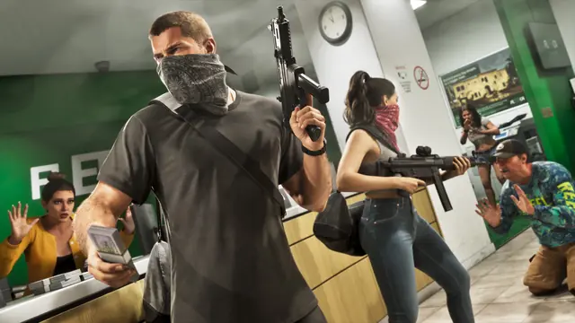

22 November 2026 · Money
GTA 6 bank vaults: how to rob them, all 8 locations and payouts
Vaults unlock at the end of Chapter 4 and pay $65K–$205K. Security vans, Yasmani’s tips, all 22 banks and the 4-star escape.
Beginner FAQs · Updated 22 November 2026
A practical launch-day checklist for Grand Theft Auto VI: how much storage you need, which edition to buy, what is (and is not) on PC, and the first-hour habits that keep you from going broke.
Background: Rockstar Games (official screenshot)
| Standard ($79.99) | Ultimate ($99.99) | |
|---|---|---|
| The game | Yes | Yes |
| Story-threaded vehicles, weapons, apparel, exclusive shops | No (upgrade sold separately) | Yes, unlocked across chapters |
| Vintage Vice City Pack (before 20 Nov 2026) | Yes, if bought in time; now a paid add-on | Yes, if bought in time; now a paid add-on |
| One month of GTA+ (digital, in the pack window) | Yes, if eligible | Yes, if eligible |
| Physical box | Download code only | No physical Ultimate; upgrade digitally |
Upgrade any time: the Ultimate Edition Upgrade is $20 / £20 / €20, the same as the price gap, so you can start with Standard and decide later. Every bonus, its unlock chapter and the upgrade steps are in our GTA 6 Standard vs Ultimate Edition guide. Full official vehicle names are on the vehicles page. GTA+ time included with digital purchases applies to the existing GTA Online / GTA+ Games Library, not a GTA 6 multiplayer mode.
PlayStation lists the game as 1 player with offline play enabled, and its official FAQ says “Grand Theft Auto VI is a single-player experience.” Take-Two’s pre-order announcement called out a single-player experience. As of 22 November 2026, Rockstar has not announced GTA 6 Online or any multiplayer date; the only “2027” timeframe comes from Twitch CEO Dan Clancy and is unconfirmed (full breakdown: GTA 6 Online release date). There is also no PC release (see our GTA 6 PC release date guide). Existing GTA Online in Grand Theft Auto V is a different service, and Take-Two said on 9 November 2026 that Rockstar will keep supporting it with new content and events.
These tips are launch-day reports (especially Polygon’s “what to do first” guide), not official manual text:
When you are ready to earn, open the GTA 6 money guide and start with the chapter you are actually in: Moses car sales in Chapter 2, jewelry stores in Chapter 3 and bank vaults at the end of Chapter 4.
The PlayStation listing highlights 30 accessibility features, including remappable controls, subtitles and captions, stick options, adjustable difficulty, simplified QTEs, control and tutorial reminders, and a basic game-speed assist. DualSense vibration and trigger effects are supported. Explore Settings before you start a long session; pick the control scheme that matches how you played earlier GTA games if a “Classic” option is offered in your build.
On Rockstar’s site: Trailer 1 (4 December 2023), Trailer 2 (6 May 2025), An Extended Look (27 August 2026), and the Launch Trailer (15 October 2026). The official album is at gtavi-thealbum.com.
GTA 6 has 22 music stations (two are unlockable playlists), two talk stations and five on-demand podcasts, per Rockstar’s official credits, and you can listen on foot with in-game headphones. Our GTA 6 radio stations guide lists every station and host and shows where to scan the posters that unlock The Vault Radio and The Sniper of La Perle.
Plan for 60 to 80 hours for the story at a normal pace. Published reviewer runs range from 42 hours (rushed) to 115 hours (doing everything), and the in-game 100% checklist takes about 200 hours. There are 91 main missions across five chapters and no mission replay, so keep manual saves. Every published time and a step-by-step plan: how long is GTA 6?
Scan cars with the WAiNK app (hold Up on the D-pad, then R1/RB) to see their Speed rating and which buyer wants them. The fastest car found so far is the Truffade Thrax (8.7), the final car on Randy’s Wish List; the fastest one you can simply steal is the Pegassi Vitello (8.2). Full ranking and locations: fastest cars in GTA 6.

Vaults unlock at the end of Chapter 4 and pay $65K–$205K. Security vans, Yasmani’s tips, all 22 banks and the 4-star escape.

42–115 hours to the credits in reviewer runs, 60–80 typical, ~200 for 100%. Missions per chapter and how to plan your playthrough.

Truffade Thrax (8.7), Progen Emerus (8.3) and Pegassi Vitello (8.2) lead. Locations, the Thrax route from Randy’s Wish List and legit upgrades.

22 music stations, talk radio and podcasts from Rockstar’s credits, how to listen on foot, and the poster locations for The Vault Radio and The Sniper of La Perle.

212 GB PS5, ~210 GB Xbox, will it fit, patch sizes, download times and how to free space.

All 16 Ultimate bonuses, the chapter each one unlocks in, how to upgrade from Standard, and who should pay for it.

Single-player at launch, no GTA 6 Online date. Official statements, the 2027 claim, GTA Online’s future and the GTA+ bonus.

Every 100% requirement, story missions by chapter, trophies and bonus cars, with progress saved on your device.

No official PC version or date. The Q1 2027 report, Xbox Cloud Gaming and Remote Play limits, and fake “PC download” malware warnings.

Who got the pack free, the new stand-alone price, and the Chapter 3 Ocean View Hotel pickup for the ’55 Vapid Stanier.
PlayStation officially said to clear a minimum of 212 GB of free storage on PS5. On Xbox Series X|S the Microsoft Store lists about 209.86 GB (some reports say 225 GB, which is the same package counted in decimal gigabytes). Two pre-launch updates (1.002.000 and 1.002.001) were reported, with no official patch notes. See the GTA 6 file size guide.
Most players should plan for 60 to 80 hours for the story. Published reviewer runs to the credits range from 42 hours (rushed) to 115 hours (doing everything), and the 100% checklist takes about 200 hours, according to PowerPyx. Full breakdown: how long is GTA 6?
Not officially yet. As of 22 November 2026 Rockstar has not announced a PC version, date, or system requirements. Reuters reports some analysts expect a PC launch in 2027, but that is a forecast, not an announcement. Any “GTA 6 PC download” offered today is not an official release. Read the GTA 6 PC release date guide.
There is no official date. The launch game is a single-player, 1-player experience, and Rockstar has not announced GTA 6 Online as of 22 November 2026. A 2027 timeframe from Twitch CEO Dan Clancy is unconfirmed. Existing GTA Online (GTA V) continues and Take-Two says it will keep getting new content. Read the full GTA 6 Online guide.
No. Official support says the physical version contains a download code only, not a disc. There is no physical Ultimate Edition; upgrade digitally after redeeming a Standard code.